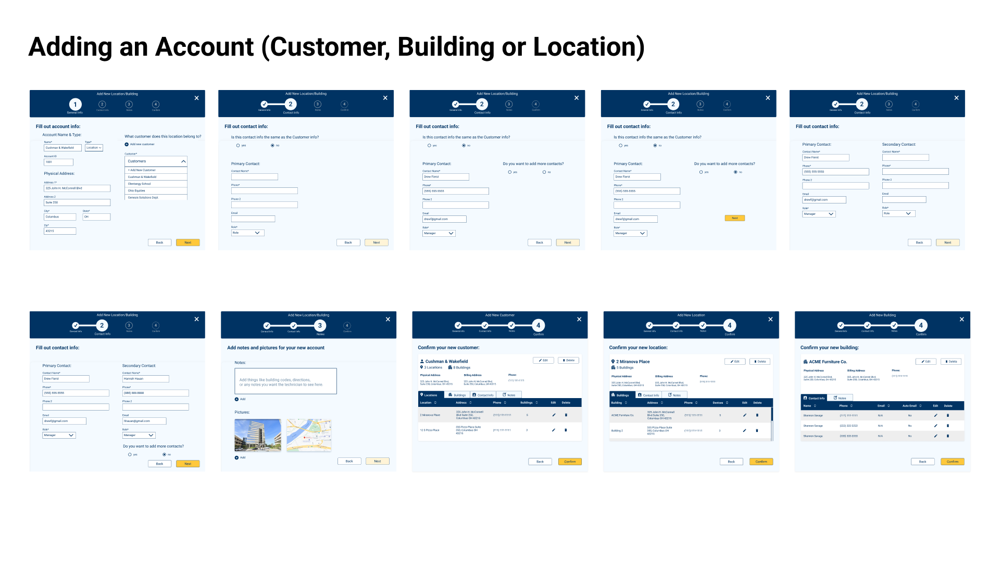
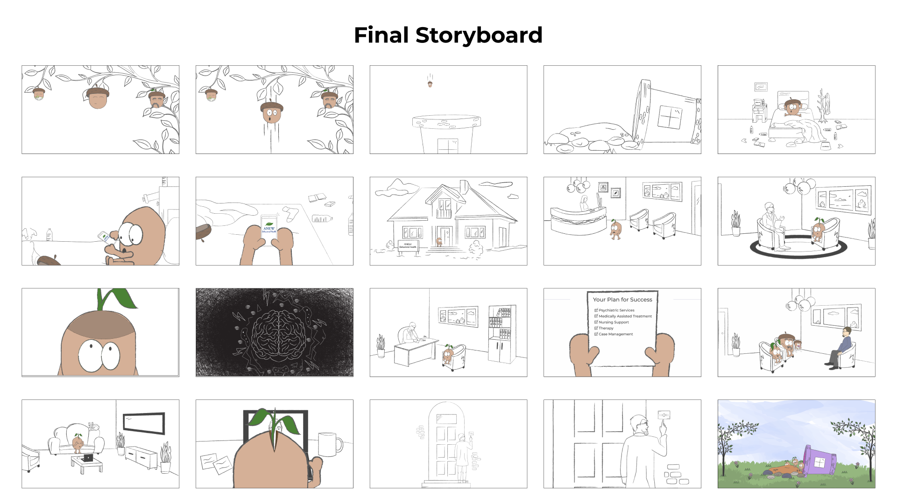
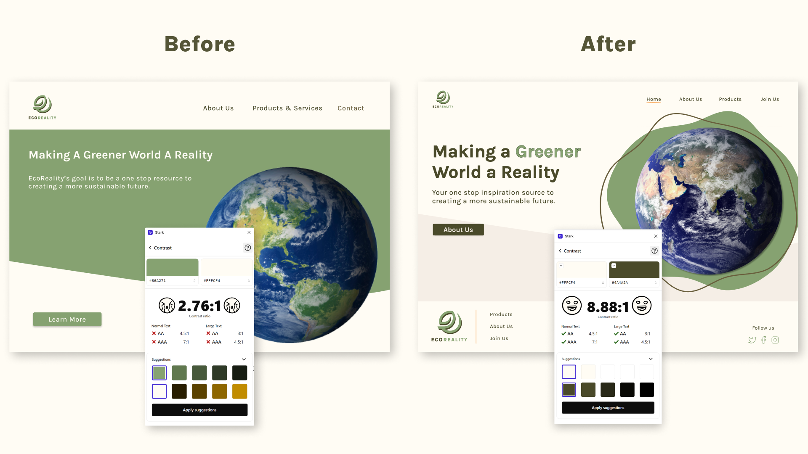
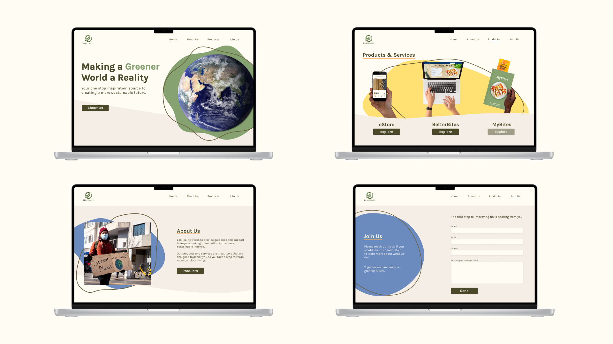
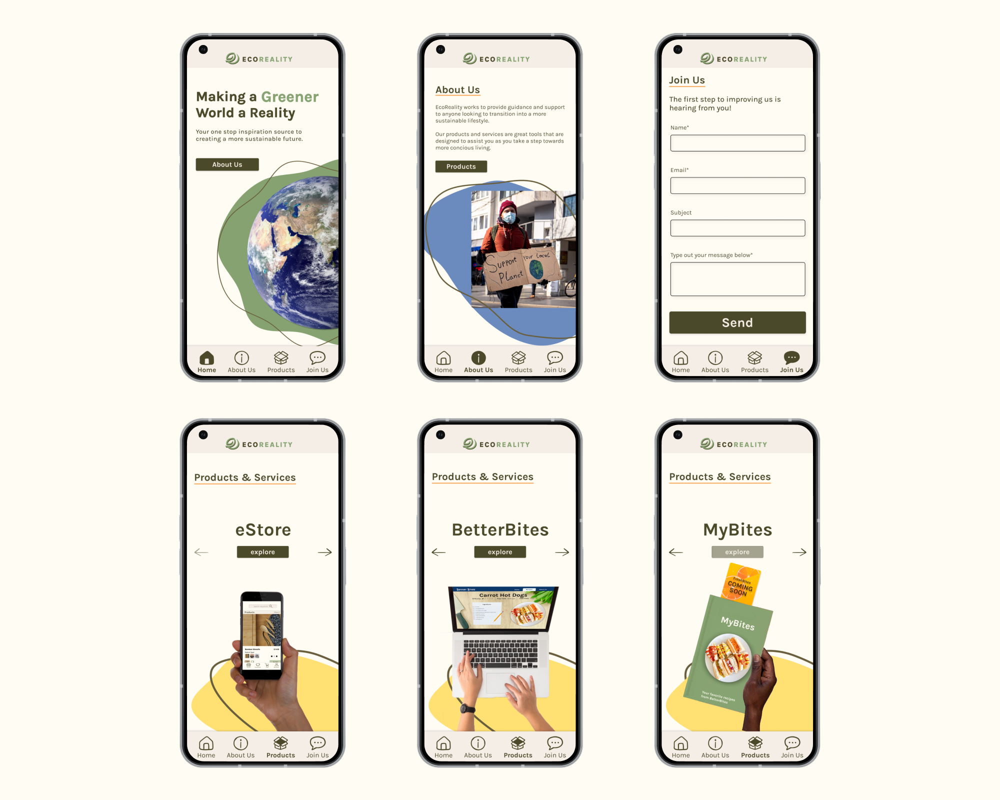
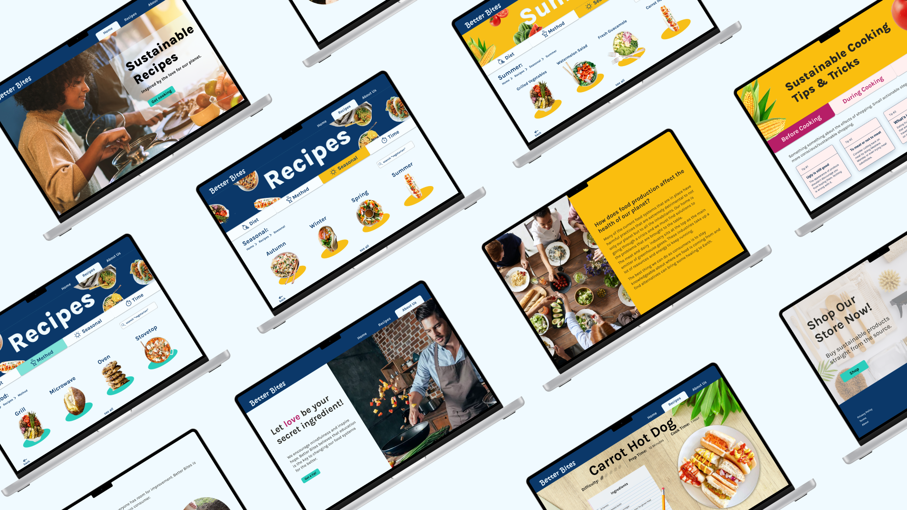
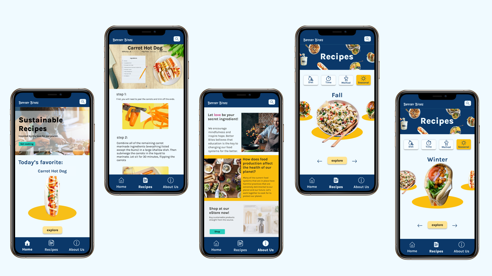

We established a structured product backlog to ensure timely completion of each component of the product development cycle. Guided by Design Thinking principles, we prioritized the creation of a Minimum Viable Product (MVP) to serve as a prototype for usability testing. Throughout the entire process, we maintained a biweekly meeting cadence with the client to showcase newly implemented features and gather their valuable feedback. We also collaborated with the client to define and optimize the Inspection Process Flow, recognizing the critical importance of this feature in their service delivery model.

As my design skills improved, I created a Youtube channel for my students to practice their Phonics words. Although I was the Math teacher, my passion for helping my students learn motivated me to create this short video series! At the time, I had no idea in the year 2020, I would benefit greatly from the time and effort I put it into drawing, animating, voicing-over, and producing these videos.

The ultimate storyboard emerged after numerous iterations, with a commitment to crafting a compelling narrative that resonated with users and kept them engaged. Designing through storytelling, illustration, and sketching has been an enjoyable aspect of this project.
With accessibility in mind, we utilized the Stark plugin on Figma to test the contrast of our color schemes. We incorporated underlines as a hover interaction on the main navigation to ensure color independence. Our final homepage resulted in a much cleaner feel to evoke calm feelings amongst users. After conducting A/B tests for each page, we compiled our final mockups to create a fully responsive website.

After many iterations, we finalized our designs to create our website. Thanks to Figma's Auto Layout feature, we created a mobile version in no time! Check out our final mockups and prototypes below.


We conducted moderated usability testing with both the mobile and web version of our prototype to fix minor interaction details. Thanks to our users, we were able to find inconsistencies across our designs. Our users loved the use of different skin tones to create an inclusive experience when viewing our products page!
The next part of our process consisted of ideating, prototyping and testing. My team was never short of ideas! We turned to sketching as a tool for anything and everything. After creating our initial lo-fidelity wireframes we moved on to testing how we would filter different recipe categories. Using a card sorting test, we quickly realized some things needed more research. This led us to eliminate anything that was too confusing for our users. We incorporated our results into the secondary navigation seen on the recipes page. Next, we created hi-fidelity mockups and conducted a 5 second test for our landing page. This gave us a lot of helpful insight and allowed us to make some major changes before moving on to creating our prototype. The initial design confused our users and made them think they were looking at a supermarket webpage. With this in mind, we scrapped our original image and swapped it for a person cooking. Finally, we created a prototype for the web version and designed hi-fidelity mockups for a mobile version. After surveying our potential users, we discovered most people preferred to find a recipe on their computer or tablet because they don't like getting their phones dirty.




Two key lessons that have enhanced my professional experience are all about development and leadership. Firstly, the collaboration with the development team was pivotal to optimize the performance of our animation-intensive website. From DevOps to Visual Studio code, my team had a blast sharing code to enhance web performance. Secondly, I gained significant leadership experience by guiding a team of three junior designers who had limited familiarity with Adobe Illustrator. Creating a range of engaging resources to enhance their illustration skills taught me that guidance fostering support and independence is key to creating a collaborative environment.